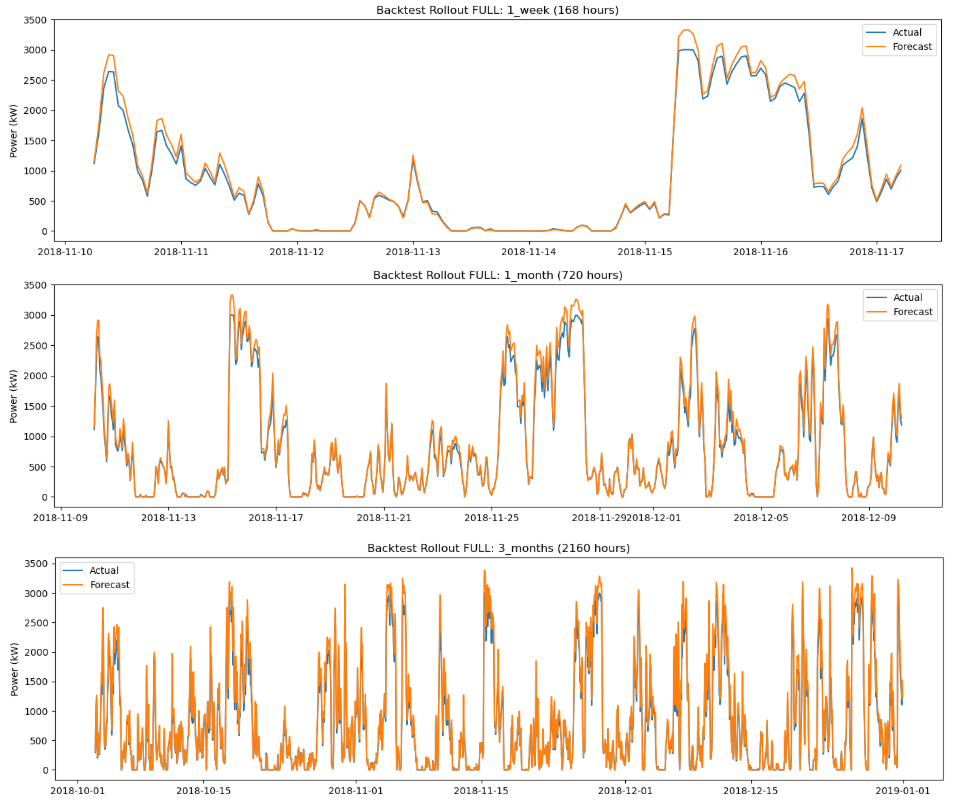
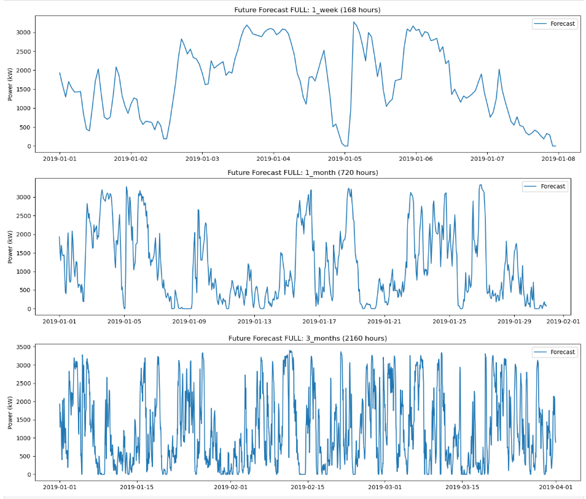

Texas Wind Turbine Validation
This section documents cross-dataset validation using a public wind turbine dataset. The purpose is to strengthen model credibility by demonstrating generalization behavior beyond the KPK station dataset.
Rollout / evaluation workflow
Illustration of the rollout strategy used to evaluate model behavior on the turbine dataset.

Future projection example
Representative future forecasting visualization for the turbine dataset.

Interpretation
This comparison is not used to replace KPK-specific results. It is used to verify whether the same modeling logic remains stable on a different wind dataset with different operating conditions.
Next step
Return to the Dashboard for interactive station selection (or GPS nearest station), forecast snapshots, and report generation.